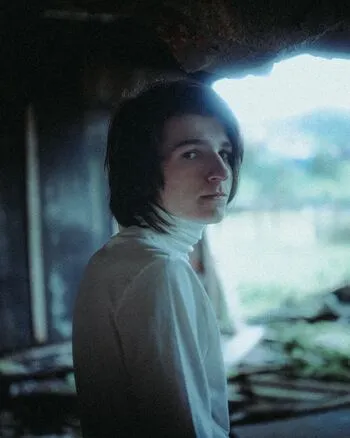
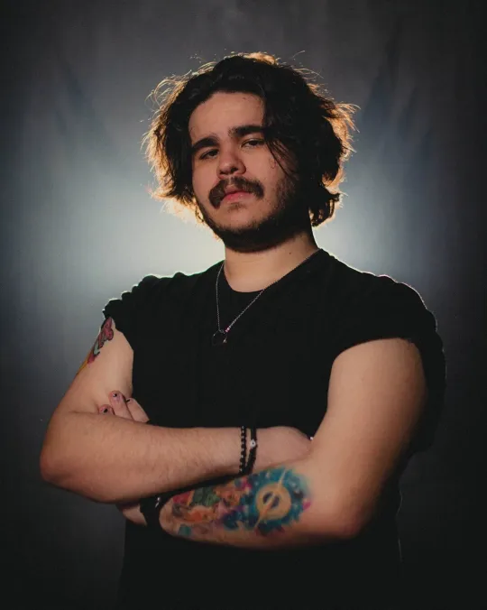
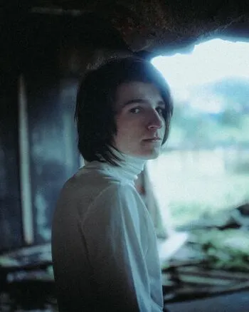
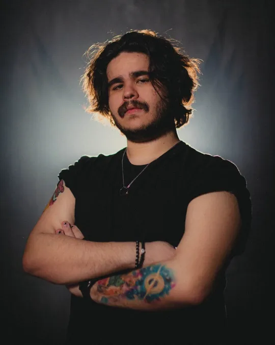

O Segredo na Ilha é a primeira campanha spin-off da série Ordem Paranormal. É uma campanha de RPG de mesa baseada no sistema Ordem Paranormal RPG. Mestrada pelo streamer, diretor criativo e roteirista de Enigma do Medo, Cellbit, é protagonizada por Amelie Florence, Bárbara Lima, Milo Castello, Olivier Florence e Wanderley Nascimento de Jesus Maria.
Em uma ilha isolada, há uma enorme mansão, construída por um pintor que desapareceu misteriosamente há mais de 20 anos. Um avaliador de artes é contratado para passar alguns dias dentro dessa mansão, à procura de pinturas valiosas dentro dela. Para isso, ele decide levar a sua família na viagem. Afinal, o que poderia dar de errado?
 


